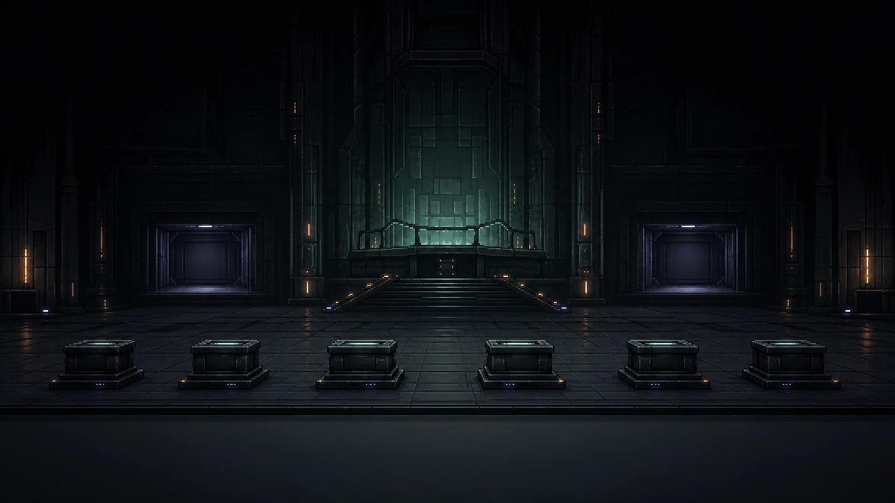

CH.06 · §2.1 CLOUD & TRANSMISSION MEDIA
CHECKING
COURSE_CARD
0%
CURRENT KNOWLEDGE
CURRENT GOAL
GUIDE · G
REFERENCE · R
CONTEXT
HINT · H
COURSE MAP
CLOUD / LINK / MEDIUM
COMPARE → CHOOSE → EXPLAIN
COURSE CARD
Cloud-media exchange offline